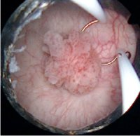
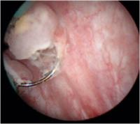

You are here: Urology Textbook > Surgery (procedures) > TURB
Transurethral resection of the bladder (TURB)
Review literature: (Collado et al, 2000).Indications for transurethral resection of the bladder (TURB)
- Removal of bladder tumors to enable a pathological diagnosis
- Endoscopic treatment of superficial bladder cancer
- Palliation of advanced bladder tumors
- Rare: treatment of interstitial cystitis
Surgical Technique of Transurethral Bladder Resection
Perioperative antibiotic prophylaxis
TURB should be done with sterile urine, any infection should treated with a full course of antibiotics. A perioperative antibiotic prophylaxis is often given, randomized studies for TURB are missing. Dosage is e.g. ciprofloxacin 500 mg p.o. 1-0-1 (for one day). Patients with risk factors for a urinary tract infection (diabetes, bladder stones and preoperative bladder catheter) benefit especially from an antibiotic prophylaxis. A perioperative antibiotic prophylaxis may reduce postoperative urinary tract infections, fever and may reduce the likelihood for urethral strictures.
Preoperative Preparations
The patient is placed in lithotomy position. Disinfect the external genitalia, the lower abdomen and the perineum and sterile draping. Spinal anesthesia or general anesthesia is needed for TURB. Spinal anesthesia offers theoretical advantages for the initial postoperative period: the patient is calm, the manipulation of the catheter is possible without pain, less pressing and coughing. General anesthesia with muscle relaxation eliminates the risk of an obturator reflex (see complications) and is preferable in lateral tumors.
Cystoscopy
Check for the width of the urethra, search for urethral tumors. The mucosa of the bladder (and prostate) is examined to identify all flat and papillary tumors.
Transurethral resection of the bladder (TURB)
- A resectoscope is introduced into the bladder (around 24 CH). If the meatus is too narrow, dilatation may be necessary. Urethral strictures need to be treated with internal urethrotomy.
- Visible tumor vessels are coagulated at the base of the tumor. The bladder tumor is resected at the base with the resection loop [fig TURB 1 and TURB 2]. After complete resection of the bladder tumor, the specimen is collected with a bladder syringe or Ellik-type evacuator.
- A separate specimen of the tumor margin and tumor base is collected to check for complete resection and to facilitate the identification of muscle-invasive bladder cancer.
- Multiple small lesions, especially in known bladder cancer, are treated with fulguration.
- Meticulous hemostasis finishes the operation, a irrigation catheter is introduced.
|  |
TURB: resection loop at the base of papillary bladder tumor (histology: Ta low grade bladder cancer). |
|  |
TURB of a solid bladder tumor (histology: T1 high grade bladder cancer) | .
TURB: Postoperative Management
Early instillation of Mitomycin C:
- The early instillation of mitomycin C reduces the risk of bladder tumor recurrence by 50%.
- Dosage: instillation of 40 mg mitomycin C in 40 ml normal saline into the bladder for one hour. The instillation is best done immediately after surgery.
- Contraindications: perforation of the bladder, severe postoperative bleeding.
Irrigation catheter:
Irrigation prevents clot formation and may reduce the risk of tumor recurrence. Remove the catheter after 1–3 days, depending on the depth of the resection and postoperative bleeding.
Complications of transurethral resection of the bladder (TURB)
- Bladder perforation (2–10%): can be managed with catheter drainage for 4–7 days, depending of the size. Healing can be controlled with cystography. Surgical exploration and repair is rarely needed.
- Severe bladder perforation can happen with obturator nerve stimulation during resection of lateral tumors. Obturator nerve reflexes may require general anesthesia with muscle relaxation or an obturator nerve block. Spinal anesthesia does not prevent obturator nerve reflexes.
- Bleeding and clot retention: transurethral clot evacuation and coagulation with anesthesia in 3%.
- Infection
- Urethral injury and urethral stricture formation
- Vesicoureteral reflux, ureteral injury or obstructive uropathy, if resection across the ureteral orifice must be done
| Urologic Surgery | Index | Bladder diseases |
Index: 1–9 A B C D E F G H I J K L M N O P Q R S T U V W X Y Z
References
- Collado, A.; Chechile, G. E.; Salvador, J. & Vicente, J.
- Early complications of endoscopic treatment for superficial bladder tumors
J Urol, 2000, 164, 1529-32
 Deutsche Version: Transurethrale Resektion der Harnblase (TURB)
Deutsche Version: Transurethrale Resektion der Harnblase (TURB)